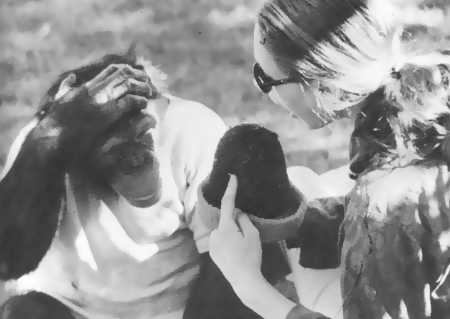
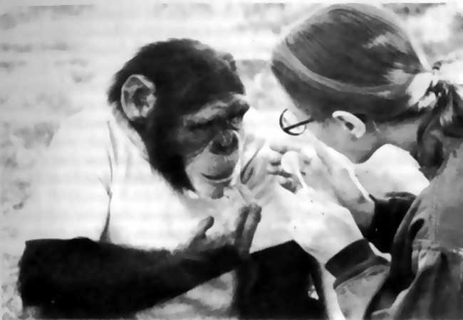
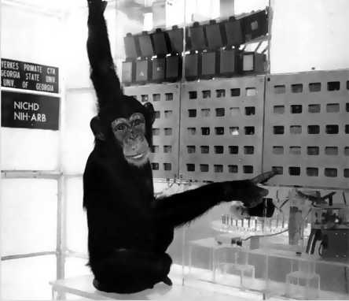
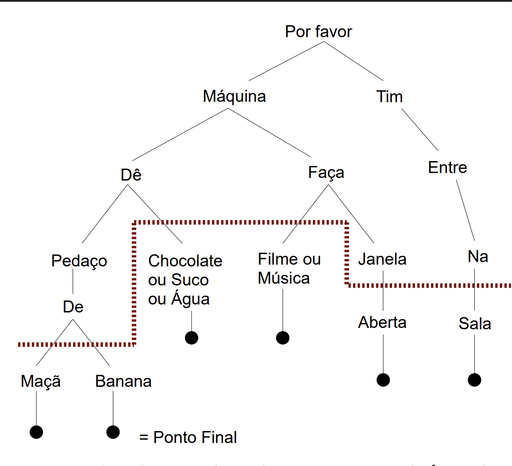
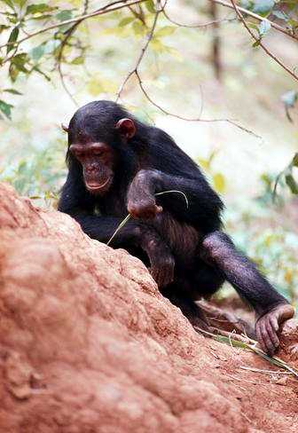

“As feras não têm capacidade de abstração”, afirmou John Locke, exprimindo a opinião predominante entre a espécie humana no decorrer de toda a história registrada. O Bispo Berkeley teve, entretanto, uma réplica sardônica: “Se o fato de os brutos não terem capacidade de abstração for considerado propriedade distintiva desse tipo de animal, receio que grande parte daqueles que passam por homens deva ser incluído em seu número”. O pensamento abstrato, pelo menos em suas variedades mais sutis, não é um companheiro invariável do dia-a-dia para o homem comum. Poderia o pensamento abstrato ser uma questão não de espécie, mas de grau? Seriam outros animais capazes de ter pensamento abstrato, mas com frequência e profundidade menor que os seres humanos?
Temos a impressão de que os outros animais não são muito inteligentes. Mas será que examinamos cuidadosamente a possibilidade da inteligência animal, ou, como no pungente filme O Menino Selvagem, de François Truffaut, será que nós simplesmente igualamos a ausência de nosso estilo de expressão de inteligência à ausência de inteligência? Ao debater a comunicação com os animais, o filósofo francês Montaigne assinalou: Por que o defeito que impede a comunicação entre nós e eles não pode ser de nossa parte assim como da deles?15
Existe, naturalmente, um volume considerável de informação anedótica a favor da inteligência do chimpanzé. O primeiro estudo sério do comportamento dos símios — inclusive seu comportamento em estado selvagem — foi realizado na Indonésia por Alfred Russel Wallace, o co-descobridor da evolução através da seleção natural*. Wallace concluiu que um filhote de orangotango comportava-se exatamente como um bebê humano em circunstâncias semelhantes. Na verdade, orangotango é uma expressão malaia que significa "homem da floresta", e não antropoide. Teuber recontou muitas histórias contadas por seus pais, etologistas alemães pioneiros que fundaram o primeiro observatório de pesquisas dedicado ao comportamento do chimpanzé em Tenerife, nas ilhas Canárias, na segunda década deste século, e nele trabalharam. Foi aí que Wolfgang Köhler realizou seus famosos estudos de Sultan, um chimpanzé gênio que era capaz de conectar dois bastes a fim de alcançar uma banana de outra forma inacessível. Em Tenerife, também, dois chimpanzés foram observados maltratando uma galinha — um deles estendia o alimento para a ave, incentivando-a a aproximar-se; enquanto isso, o outro arremetia golpes contra ela com um pedaço de arame que escondera nas costas. A galinha recuava, mas logo se aproximava novamente e novamente era atingida. Eis aí uma requintada combinação de comportamento — às vezes considerada exclusivamente humana — de cooperação, planejamento de uma sequência futura de ações, simulação e crueldade. Também revela que as galinhas têm uma ínfima capacidade de aprender o comportamento esquivo.
Até alguns anos atrás, a mais longa tentativa de se comunicar com os chimpanzés transcorreu da seguinte forma: um chimpanzé recém-nascido foi admitido ao convívio doméstico com uma criança recém-nascida e os dois seriam criados juntos — berço duplo, carrinhos duplos, cadeira alta dupla, canecas duplas, baldes de fraldas duplos, latas de talco duplas. Ao final de três anos, o jovem chimpanzé superara naturalmente o menino na destreza manual, corrida, salto, subida e outras habilidades motoras. Mas, enquanto a criança tagarelava… alegremente, o pequeno chimpanzé falava apenas, e ainda assim com enorme dificuldade, as palavras em inglês correspondentes a "mamãe", "papai" e "xícara" (mama, papa, cup). A partir dessa experiência, concluiu-se amplamente que "na linguagem, no raciocínio e em outras funções mentais, os chimpanzés têm apenas mínima competência". As feras não têm capacidade de abstração.
Mas ao analisar pormenorizadamente essas experiências, dois psicólogos, Beatrice e Robert Gardner, da Universidade de Nevada, perceberam que a faringe e a laringe do chimpanzé não são apropriadas à linguagem humana. Os seres humanos apresentam um curioso uso múltiplo da boca para comer, respirar e se comunicar. No caso de insetos como o grilo, que chamam um ao outro friccionando as pernas, essas três funções são exercidas por sistemas orgânicos completamente independentes. A linguagem humana falada parece ser adventícia. A utilização de sistemas orgânicos com outras funções para a comunicação nos seres humanos também é indicativa de evolução relativamente recente de nossas habilidades linguísticas. Pode ser, argumentam os Gardner, que os chimpanzés possuam razoável capacidade de linguagem, incapaz de ser expressa em virtude das limitações de sua anatomia. Haveria alguma linguagem simbólica, indagavam, que pudesse aproveitar as forças ao invés das fraquezas da anatomia do chimpanzé?
Os Gardner chegaram a uma brilhante ideia: ensinar a um chimpanzé uma linguagem americana de sinais, conhecida por seu acrônimo AMESLAN* (AMErican Sign LANguage) e às vezes por "linguagem americana de surdos e mudos" — o "mudo" (dumb) naturalmente se refere à incapacidade de falar e não a qualquer deficiência de inteligência. É perfeitamente adequada à imensa destreza manual do chimpanzé, e também pode ter todas as características gráficas das linguagens verbais.
Existe agora uma vasta biblioteca de conversas descritas e filmadas utilizando o AMESLAN* e outras linguagens gestuais com Washoe, Lucy, Lana e outros chimpanzés estudados pelos Gardner e por outros. Não somente existem chimpanzés com vocabulários operacionais de 100 a 200 palavras, mas também há chimpanzés capazes de distinguir entre padrões gramaticais e sintáticos diferentes. E, mais, eles têm se mostrado notavelmente inventivos na construção de novas palavras e expressões.

[Imagem: Washoe fazendo, em AMESLAN*, o sinal "chapéu" para um gorro de lã.
Ao ver pela primeira vez um pato grasnando quando pousava em um lago, Washoe fez os gestos "ave aquática" — que é a mesma expressão em inglês e em outras línguas, mas que Washoe inventou para a ocasião. Não tendo jamais visto uma fruta redonda além da maçã, mas conhecendo os sinais para as principais cores, Lana, após espiar um técnico comendo uma laranja, fez os sinais "maçã cor de laranja". Depois de provar uma melancia, Lucy descreveu-a como "bebida doce" (candy drink), ou "bebida fruta" (drink fruit) — que é essencialmente a mesma forma verbal da palavra inglesa para melancia (watermelon). Mas, depois de ter queimado a boca ao comer pela primeira vez um rabanete, Lucy passou a descrevê-los sempre como "comida fere chora". Uma pequena boneca colocada inesperadamente na xícara de Washoe provocou a resposta "bebê na minha bebida". Quando Washoe evacuava, sobretudo nas roupas e nos móveis, ela era ensinada a fazer o sinal "sujo", o qual ela depois extrapolou como um termo geral para abuso. Um macaco Rhesus que lhe provocou desagrado foi repetidamente chamado por sinais de "macaco sujo, macaco sujo, macaco sujo". Eventualmente, Washoe dizia coisas como "Jack sujo, me dá bebida". Lana, em um momento de aborrecimento criativo, chamou seu treinador de "seu bosta verde". Os chimpanzés inventaram palavrões. Washoe também parece ter uma espécie de humor — uma vez, ao passear montada nos ombros de seu treinador, molhou-o, talvez inadvertidamente, e fez o sinal "Engraçado, engraçado".

[Imagem: Washoe fazendo, em ameslan*, o sinal “doces” para um pirulito.
Lucy foi finalmente capaz de distinguir claramente o significado das orações "Roger faz cócegas em Lucy" e "Lucy faz cócegas em Roger" — ambas atividades que ela apreciava. Da mesma forma, Lana extrapolou de "Tim arruma Lana" para "Lana arruma Tim". Washoe foi visto lendo uma revista — isto é, virando lentamente as páginas, examinando atentamente as figuras e fazendo, para ninguém em particular, um sinal compatível, tal como "gato" quando via uma fotografia de um tigre, e "bebida" quando avistava um anúncio de vermute. Tendo aprendido o sinal "abrir" com uma porta, Washoe estendeu o conceito para uma maleta. Ela também tentou conversar em AMESLAN* com o gato do laboratório, que passou a ser o único analfabeto nas instalações. Tendo adquirido esse fantástico método de comunicação, Washoe deve ter ficado surpresa com o fato de o gato não ser também versado em AMESLAN*. E quando um dia Jane, a mãe adotiva de Lucy, deixou o laboratório, Lucy fitou-a e fez o sinal "Chorar eu. Eu chorar."
Boyce Rensberger é um repórter sensível e bem-dotado do New York Times cujos pais não falam nem ouvem, embora ele seja normal em ambos os aspectos. Sua primeira língua, entretanto, foi o AMESLAN*. Ele esteve fora, num país europeu, a serviço do Times por alguns anos. Quando retornou aos Estados Unidos, uma de suas primeiras atribuições foi fazer a cobertura das experiências dos Gardner com Washoe. Aps certo tempo com o chimpanzé, Rensberger relatou: De repente me dei conta de que estava conversando com um membro de outra espécie na minha lngua nativa.
O uso da palavra "língua" — naturalmente figurativo — implanta-se profundamente na estrutura da linguagem; a palavra também significa língua. Na realidade, Rensberger estava conversando com um membro de outra espécie na sua "mão" (hand) nativa. E foi justamente essa transição de "língua" para "mão" que permitiu aos seres humanos readquirir a capacidade perdida, de acordo com Josephus, desde o Éden — de se comunicar com os animais.
Além do AMESLAN*, os chimpanzés e outros primatas* não-humanos estão sendo ensinados a se comunicar em diversas outras linguagens gestuais. No Centro de Pesquisas Regional de Primatas de Yerkes em Atlanta, Geórgia, estão aprendendo uma linguagem específica de computador chamada pelos homens, não pelos chimpanzés, de "yerkish". O computador registra todas as conversações, mesmo durante a noite, quando não existe participação de seres humanos — a partir desse serviço, viemos a saber que os chimpanzés preferem o jazz ao rock e os filmes com chimpanzés aos filmes com seres humanos. Lana, em janeiro de 1976, já assistira a "A Anatomia Evolutiva do Chimpanzé" 245 vezes. Ela certamente apreciaria uma coleção de filmes um pouco maior.
Na ilustração, mostramos Lana pedindo em "castio yerkish" um pedaço de banana ao computador. A sintaxe necessária para pedir ao computador água, suco, chocolate, música, filme, janela aberta e companhia também se encontra exposta. A máquina satisfaz a muitas das necessidades de Lana, mas nem todas. Às vezes, no meio da noite, ela pede desoladamente: Por favor, máquina, faça cócegas em Lana. Pedidos e comentários mais elaborados, exigindo o uso criativo de uma forma gramatical estabelecida, foram concebidos subsequentemente.

[Imagem: Lana com seu computador. A barra superior, imediatamente acima da borda, deve ser puxada a fim de ativar o controle. Dispositivos para suco, água, bananas e chocolates ficam próximo da base do console.
Lana controla suas frases na tela do computador e apaga aquelas que contêm erros gramaticais.Numa ocasião, em meio à construção de uma elaborada sentença, o treinador de Lana, maliciosamente e repetidamente, intercalou, a partir de seu console separado no computador, uma palavra que não fazia sentido na frase de Lana. Ela fitou a tela do computador, examinou seu treinador em seu console e compôs uma nova frase: Por favor, Tim, saia da sala. Assim como Washoe e Lucy são capazes de falar, Lana é capaz de escrever.
No início do desenvolvimento das capacidades verbais de Washoe, Jacob Bronowski e um colega escreveram um artigo científico negando a validade do uso da linguagem gestual desempenhada por Washoe porque, nos limitados dados de que Bronowski dispunha, Washoe não indagava nem negava. Observações posteriores, no entanto, mostraram que Washoe e outros chimpanzés eram perfeitamente capazes de formular perguntas, assim como de negar asserções apresentadas.
É difícil ver alguma diferença importante na qualidade entre o uso da linguagem gestual dos chimpanzés e Fo uso da fala comum por crianças — forma que não hesitamos em atribuir inteligência. Ao ler o artigo de Bronowski, não posso deixar de sentir a infiltração de uma ponta de chauvinismo humano, um eco de "as feras não têm capacidade de abstração" de Locke.
Em 1949, o antropólogo americano Leslie White afirmou categoricamente: O comportamento humano = comportamento simbólico; o comportamento simbólico = comportamento humano. Onde White incluiria Washoe, Lucy e Lana?

[Imagem: O diagrama mostra a árvore lógica necessária para a comunicação de uma série de pedidos. O sistema tanto é gentil quanto gramatical: as solicitações têm de começar com “por favor” e terminar com um ponto final.
Essas descobertas sobre a linguagem e a inteligência dos chimpanzés proporcionam uma intrigante base para os argumentos do Rubicão — a afirmação de que a massa cerebral total, ou pelo menos a relação entre a massa cerebral e a massa corporal, é um índice de inteligência válido. Contra esse ponto de vista já se argumentou que os limites inferiores das massas cerebrais dos microcéfalos* se sobrepõem aos limites superiores das massas cerebrais dos chimpanzés e gorilas adultos — e mesmo assim, argumentaram, os microcéfalos* fazem algum uso da linguagem, embora de forma extremamente precária, enquanto os antropoides nada conseguem. Mas apenas em relativamente poucos casos os microcéfalos* são capazes de falar.
Uma das melhores descrições comportamentais dos microcéfalos* foi feita por um físico russo, S. Korsakov, que em 1893 observou uma mulher microcéfala* chamada Masha. Ela compreendia muito poucas perguntas e ordens, e eventualmente recordava os fatos de sua infância. Às vezes ela conversava muito, mas pouca coerência havia naquilo que dizia. Korsakov caracterizou sua fala como de "extrema pobreza em associações lógicas".
A título de exemplo de sua inteligência mal-adaptada e autômata, Korsakov descreveu seus hábitos alimentares. Quando havia comida na mesa, Masha comia. Mas se esta fosse subitamente retirada no meio da refeição, ela se comportava como se a refeição tivesse terminado, agradecendo aos que a serviam e se benzendo piedosamente. Se a comida fosse posta de novo, ela passava a comer novamente. O padrão, aparentemente, obedecia a uma repetição indefinida.
Minha impressão pessoal é de que Washoe ou Lucy seriam companhia muito mais interessante para o jantar do que Masha, e que a comparação dos seres humanos microcéfalos* com antropoides normais não é incompatível com alguma espécie de Rubicão de inteligência. Naturalmente, tanto a qualidade quanto a quantidade de conexões neurais são provavelmente vitais para as espécies de inteligência que podemos facilmente reconhecer.
Experiências recentes realizadas por James Dewson, da Faculdade de Medicina da Universidade de Stanford, e seus colaboradores proporcionam algum suporte fisiológico à ideia de centros da linguagem no neocórtex* dos símios — em particular, tal como nos seres humanos, no hemisfério esquerdo. Treinaram-se macacos para apertar uma luz verde quando ouvissem um silvo e uma luz vermelha quando ouvissem um zumbido. Alguns segundos depois de ouvir um som, a luz vermelha ou a verde apareciam em alguma posição imprevisível — diferente de cada vez — no painel de controle. O macaco pressionava a luz certa e, no caso de suposição correta, era recompensado com porções de comida.
Posteriormente, o intervalo de tempo entre o ouvir o som e o ver a luz foi aumentado para 20 segundos. A fim de serem recompensados, os macacos agora tinham de lembrar durante 20 segundos qual o som que tinham ouvido. A equipe de Dewson então extirpou cirurgicamente parte do chamado córtex de associação auditiva do hemisfério esquerdo do neocórtex* no lobo temporal*. Quando retestados, os macacos evidenciaram muito pouca memória do som que ouviam. Depois de menos de um segundo, não podiam mais lembrar se era um silvo ou um zumbido. A extirpação* de uma parte comparável do lobo temporal* do hemisfério direito não produziu qualquer efeito sobre essa tarefa.
Declarou Dewson: como se tivéssemos extirpado a estrutura do cérebro do macaco que pode ser análoga aos centros de linguagem do homem. Estudos semelhantes com macacos Rhesus utilizando estímulos visuais em lugar de auditivos aparentemente não mostram diferença entre os hemisférios do neocórtex*.
Em virtude de os chimpanzés serem geralmente considerados perigosos demais — pelo menos assim pensam os guardas do zoológico — para serem mantidos em casa ou em ambiente doméstico, Washoe e outros chimpanzés verbalmente versados têm sido involuntariamente aposentados logo após a puberdade. Por conseguinte, até agora não temos experiência com as capacidades de linguagem dos macacos e antropoides adultos.
Uma das indagações mais intrigantes é se uma mãe chimpanzé verbalmente versada será capaz de transmitir a linguagem à sua prole. Parece muito provável essa possibilidade — e a de que uma comunidade de chimpanzés que tenha sido treinada em linguagem gestual transmita essa linguagem a gerações subsequentes. Nos casos em que essa comunicação é essencial para a sobrevivência, já existem alguns indícios de que os antropoides transmitem informação extragenética ou cultural. Jane Goodall observou pequenos chimpanzés em estado selvagem imitando o comportamento de suas mães e aprendendo a tarefa razoavelmente complexa de encontrar um galhinho adequado e utilizá-lo para cutucar um ninho de térmitas a fim de obter alguns desses petiscos.

[Imagem: Chimpanzé com uma longa lâmina de gramínea usada como instrumento para espetar térmitas e tirá-los de seus ninhos. Fotografia do Barão Hugo van Lawick. National Geographic Society
Diferenças no comportamento grupal — algo que nos parece muito tentador chamar de "diferenças culturais" — foram relatadas entre chimpanzés, babuínos, macacos e muitos outros primatas*. Por exemplo, um grupo de macacos pode saber como comer ovos de passarinho enquanto um bando adjacente da mesma espécie não sabe. Tais primatas* conhecem uma dúzia de sons ou gritos que são usados para a comunicação intragrupal, com significados do tipo "Fuja, aí vem um predador." O som dos gritos, no entanto, varia bastante de grupo para grupo — existem sotaques regionais.
Uma experiência ainda mais impressionante foi acidentalmente realizada por primatologistas japoneses tentando aliviar a superpopulação e o problema da fome em uma comunidade de macacos numa ilha do sul do Japão. Os antropólogos lançaram grãos de trigo na areia de uma praia. Ora, é muito difícil separar grãos de trigo, um a um, dos grãos de areia — tal esforço poderia despender ainda mais energia do que a adquirida pela ingestão do trigo colhido. Mas uma macaca brilhante, Imo, talvez por acaso ou sem querer, atirou punhados da mistura na água. O trigo flutua, a areia afunda — esse foi um fato que Imo notou claramente. Através do processo de separação ela foi capaz de comer bem uma dieta de trigo encharcado.
Bem verdade que, enquanto os macacos velhos, empenhados à sua maneira, não tomaram conhecimento dela, os macacos mais jovens pareciam perceber a importância de sua descoberta e a imitaram. Na geração seguinte, a prática era mais disseminada — hoje, todos os macacos da ilha sabem fazer a separação pela água, um exemplo de tradição cultural entre os macacos.
Os primeiros estudos realizados no Takasakiyama, uma montanha no nordeste de Kyushu, habitada por macacos, revelam um padrão semelhante na evolução cultural. Os visitantes de Takasakiyama atiravam caramelos embrulhados em papel para os macacos — uma prática comum nos zoológicos japoneses, mas que os macacos de Takasakiyama ignoravam completamente. No decurso da ação, alguns macaquinhos descobriram como desembrulhar os caramelos e comê-los. O hábito foi passado adiante sucessivamente a seus companheiros, suas mães, aos machos dominadores que entre os macacos desempenham o papel de babás dos menores e finalmente aos machos subadultos, que se situavam a maior distância social dos macacos mais novos. O processo de aculturação levou mais de três anos.
Nas comunidades primatas* naturais, as comunicações não-verbais existentes são tão ricas… que é exercida pouca pressão para o desenvolvimento de uma linguagem gestual mais elaborada. Se a linguagem gestual fosse, porém, necessária à sobrevivência do chimpanzé, não resta dúvida de que seria transmitida através das gerações. Eu esperaria um considerável desenvolvimento e elaboração da linguagem em apenas algumas gerações se todos os chimpanzés incapazes de se comunicar morressem ou não conseguissem reproduzir-se. O inglês básico consiste em aproximadamente mil palavras. Os chimpanzés já são versados em vocabulários que excedem 10 por cento desse número.
Embora há alguns anos parecesse a mais absurda ficção científica, não me parece fora de cogitação que, aps algumas gerações em tal comunidade verbal de chimpanzés, surjam as memórias da história natural e da vida mental de um chimpanzé, publicadas em inglês ou em japonês — talvez com um "era uma vez no princípio".
Se os chimpanzés têm consciência, se têm capacidade de abstração, não devem eles ter acesso àquilo que se convencionou chamar até agora de "direitos humanos"? Que inteligência o chimpanzé terá de atingir até que seu assassínio seja considerado crime? Que outras propriedades deve demonstrar para que os missionários achem que vale a pena tentar convertê-los a suas religiões?
Recentemente, visitei um grande laboratório de pesquisas com primatas*, acompanhado do diretor da instituição. Chegamos a um longo corredor no qual se dispunham, até a linha do infinito — qual desenho em perspectiva — chimpanzés enjaulados. Viviam um, dois ou três em cada jaula e estou certo de que as acomodações eram exemplares, levando-se em conta o tipo de instituição ou os jardins zoológicos tradicionais. Quando nos aproximamos da jaula mais próxima, seus dois ocupantes arreganharam os dentes e, com incrível precisão, lançaram grandes cusparadas impetuosamente, praticamente ensopando o guarda-pó do diretor. Emitiram então uma salva de guinchos que ecoaram pelo corredor e que foram repetidos e amplificados pelos outros chimpanzés enjaulados, que certamente não nos tinham visto, até que o corredor praticamente balançou com os ganidos, golpes e sacudir das barras.
O diretor me afirmou que em tais situações não é só cuspe que costuma voar — e com nítidos sinais de pressa, nos retiramos. Fui agudamente acometido da memória daqueles filmes americanos da década de 30 ou 40 — passados em alguma vasta e desumanizada penitenciária estadual ou federal, na qual os prisioneiros golpeavam ruidosamente seus talheres contra as barras assim que aparecia o carcereiro tirânico.
Esses chimpanzés são saudáveis e bem-alimentados. Se eles são apenas animais, se eles são feras que não têm capacidade de abstração, então minha comparação é uma tolice sentimental. Acontece que os chimpanzés têm capacidade de abstração. À semelhança de outros mamíferos, eles sentem emoções fortes. Certamente, não cometeram crimes. Não reivindico uma resposta, mas acho certamente válido levantar a questão: por que, exatamente, em todo o mundo civilizado, em praticamente todas as cidades grandes, os antropoides vivem em prisões?
Na medida do que sabemos, são possíveis eventuais cruzamentos viáveis entre seres humanos e chimpanzés16. A experiência natural deve ter sido tentada com muito pouca frequência, pelo menos nos últimos tempos. Caso essa prole venha um dia a ser produzida, qual será seu estado legal?
Na minha opinião, as capacidades cognitivas dos chimpanzés nos força a levantar indagações quanto aos limites da comunidade dos seres aos quais cabem as considerações éticas especiais, e podem, espero, ajudar a ampliar nossas perspectivas éticas para outras espécies da Terra e para organismos extraterrestres, se é que existem.
É difícil imaginar o significado emocional, para os chimpanzés, do aprendizado de uma linguagem. Talvez a analogia mais próxima seja a descoberta da linguagem pelos seres humanos inteligentes portadores de profunda lesão do sistema sensorial. Embora a profundidade da compreensão, da inteligência e da sensibilidade de Helen Keller — que não via, não ouvia e não falava — exceda enormemente a de qualquer chimpanzé, seu relato da descoberta da linguagem transmite um pouco da emoção que esse notável desenvolvimento nas linguagens primatas* deve transmitir ao chimpanzé, particularmente num contexto em que a linguagem favoreça a sobrevivência ou traga imensos benefícios:
Talvez o aspecto mais pungente desses três primorosos parágrafos seja a própria percepção de Helen Keller de que seu cérebro possuía uma capacidade latente para a linguagem, que precisava apenas ser-lhe apresentada. Essa ideia é essencialmente platônica, como já vimos, compatível com aquilo que se sabe, a partir de lesões cerebrais, a respeito da fisiologia do neocórtex* e também com as conclusões teóricas elaboradas por Noam Chomsky, do Instituto de Tecnologia de Massachusetts, com base em experiências linguísticas e laboratoriais comparativas do aprendizado.
Nos últimos anos, vem se tornando evidente que os cérebros dos primatas* não-humanos são preparados da mesma forma, embora provavelmente em escala menor, para a linguagem. O significado, a longo prazo, do ensinamento da linguagem aos outros primatas* dificilmente pode ser superestimado.
Existe uma passagem arrebatadora no livro de Charles Darwin A Descendência do Homem:
Essa mesma opinião sobre os notáveis poderes da linguagem e da intercomunicação humana pode ser encontrada em um ponto bastante diferente, como a descrição, no Gênesis, da Torre de Babel. Deus, em atitude estranhamente defensiva para um ser onipotente, mostra-se preocupado com o fato de o homem pretender construir uma torre até o céu. Sua atitude é semelhante à preocupação que exprime depois de Ádão comer a maçã. Para evitar que a espécie humana atinja o céu — pelo menos metaforicamente — Deus não destrói a torre, como, por exemplo, Sodoma foi destruída. Não. Em vez disso, ele diz:
O uso continuado de uma linguagem perfeita…
Que espécie de cultura, que espécie de tradição oral estabeleceriam os chimpanzés após algumas centenas de milhares de anos de uso de uma complexa linguagem gestual? E se existisse tal comunidade isolada de chimpanzés, como seria que eles veriam a origem da linguagem? Seriam os Gardner e os pesquisadores do Centro de Primatas* de Yerkes lembrados vagamente como lendários heróis populares ou deuses de outra espécie? Existiriam mitos, como os de Prometeu, Thoth ou Oannes, acerca de seres divinos que deram o dom da linguagem aos antropoides?
De fato, a instrução de chimpanzés em linguagem gestual apresenta nitidamente a mesma emoção e sentido religioso do episódio — na verdade fictício — do filme e do livro 2001: Uma Odisseia no Espaço, no qual um representante de uma civilização extraterrestre evoluída instrui de alguma forma nossos ancestrais homindeos.
Talvez o aspecto mais marcante de toda esta matéria seja o de que existem primatas* não-humanos tão próximos da linguagem, tão ansiosos pelo aprendizado, tão completamente competentes em seu uso e inventivos em sua aplicação — uma vez ensinada a linguagem… Isso, porém, suscita uma curiosa indagação: por que estão todos à margem? Por que não existem primatas* não-humanos dotados de uma complexa linguagem gestual?
Uma resposta possível, me parece, seria a de que os homens teriam exterminado sistematicamente todos os outros primatas* que dessem mostras de inteligência. Isso se aplica particularmente aos primatas* não-humanos que habitavam as savanas — as florestas devem ter proporcionado alguma proteção aos chimpanzés e gorilas contra as depredações do homem. Pode ser que tenha sido o homem o agente da seleção natural* na supressão da competição intelectual. Acho que podemos ter feito recuar as fronteiras da inteligência e a capacidade linguística dos primatas* não-humanos até que sua inteligência se tornou indiscernível. Ao ensinar a linguagem gestual aos chimpanzés, estamos começando uma tardia tentativa de estabelecer correções.